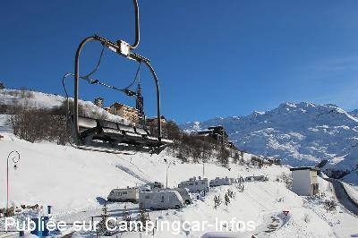
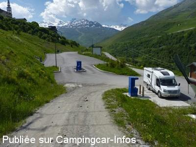
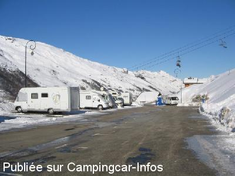
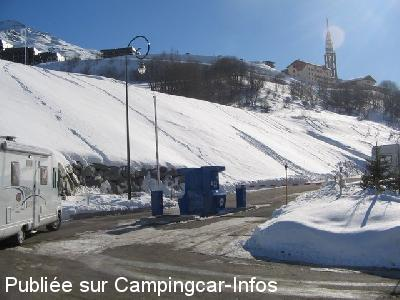

ASN = Aire de services avec stationnement nuit possible de :
SAINT MARTIN DE BELLEVILLE Les Menuires
(N° 832)
Accès/adresse :
Preyerand
Station Les Ménuires
73440 SAINT MARTIN DE BELLEVILLE
Station Les Ménuires
73440 SAINT MARTIN DE BELLEVILLE
Latitude : (Nord) 45.32585° Décimaux ou 45° 19′ 33′′
Longitude : (Est) 6.53392° Décimaux ou 6° 32′ 2′′
Tarif : 2015
Stationnement gratuit de 0 à 20 mn
24 h : 10 €
Taxe de séjour + 13 ans : 0,20 €
Services : 2 €
Électricité :
- 4 h 1 jeton : 2 €
Vidange, eau : 1 jeton
Règlement uniquement par carte bancaire
à la borne d'achat de jetons
Type de borne : FLOT BLEU
Services :


Commerces
restaurants
supérette
location de ski
Autres informations :
70 emplacements ensoleillés.
Entrée et sortie par carte magnétique Reliée au centre de la Croisette par un téléphérique gratuit
2 bornes sanitaires
7 bornes électricité
http://www.lesmenuires.com/hiver/aire-camping-cars-91.htm
Tel : +33(0)479 007 300

Le 01/12/2014 par keepcontrol

Le 28/06/2010 par Xtian74

Le 01/02/2009 par hervesonia

Le 01/02/2009 par hervesonia
de
gileve
le 01/02/2016 :
Bonjour
Nous rentrons des MENUIRES ou nous avons passé le Weekend , aire très bien hors période scolaire.Dommage qu'il n'y ait que peu de borne, certes avec 4 prises. L'ampérage est assez important >10A voir plus , en effet certains étaient sur la même prise avec des radiateurs électriques.
Domaine skiable très vaste et très agréable.Le samedi le forfait est à moitie prix =23.50€ par adulte.
Bonjour
Nous rentrons des MENUIRES ou nous avons passé le Weekend , aire très bien hors période scolaire.Dommage qu'il n'y ait que peu de borne, certes avec 4 prises. L'ampérage est assez important >10A voir plus , en effet certains étaient sur la même prise avec des radiateurs électriques.
Domaine skiable très vaste et très agréable.Le samedi le forfait est à moitie prix =23.50€ par adulte.
de
eric76
le 22/03/2015 :
super pour le ski,dommage que certaines personnes bloques les prises de courant sans partage possible,vidange et remplissage facile.
super pour le ski,dommage que certaines personnes bloques les prises de courant sans partage possible,vidange et remplissage facile.
de
Nicolas Arthus
le 27/12/2013 :
Cette aire est un must l'hiver. Bien déneigée, pas très chère, 10€ les 24 heures, accès direct aux pistes le matin comme le soir sans déchausser. Vite complète car énorme succès. Une de nos préférées pour le ski.
Cette aire est un must l'hiver. Bien déneigée, pas très chère, 10€ les 24 heures, accès direct aux pistes le matin comme le soir sans déchausser. Vite complète car énorme succès. Une de nos préférées pour le ski.
de
Xtian74
le 18/01/2012 :
Après une chute de neige, la route est rapidement déneigée jusqu'aux Ménuires, mais le chemin d'accès à l'aire nécessite de chaîner. Pour qui a l'habitude de rouler sur la neige, il pourra arriver SANS chaînes jusqu'à la petite plateforme devant la barrière où il faut bien s'arrêter, mais comme il y a une petite déclivité, pour repartir il faudra chaîner pour les 2 derniers mètres ! Tarif des forfaits ski 39,50 € tarif senior.
Après une chute de neige, la route est rapidement déneigée jusqu'aux Ménuires, mais le chemin d'accès à l'aire nécessite de chaîner. Pour qui a l'habitude de rouler sur la neige, il pourra arriver SANS chaînes jusqu'à la petite plateforme devant la barrière où il faut bien s'arrêter, mais comme il y a une petite déclivité, pour repartir il faudra chaîner pour les 2 derniers mètres ! Tarif des forfaits ski 39,50 € tarif senior.
de
freddy
le 03/01/2012 :
§Superbe aire à tarif correct (10 € par jour + 2€ pour 4h electr ou 20 min vidange/eau) mais victime de son succès. Nous avons réussi à trouver une place mais certains camping caristes ont du faire demi tour car plus de place (période de vacances de noël). Bien située : à 50 mètres en contrebas de la télécabine qui monte à la croisette, proche des pistes de fond et alpin. Les inconvénients : on a dû chaîner pour y accéder (pour quelques mètres c'est rageant), le manque de bornes électriques (heureusement un gentil camping-cariste a bien voulu partager), l'aire est à l'ombre dès 15 h l'après midi.
§Superbe aire à tarif correct (10 € par jour + 2€ pour 4h electr ou 20 min vidange/eau) mais victime de son succès. Nous avons réussi à trouver une place mais certains camping caristes ont du faire demi tour car plus de place (période de vacances de noël). Bien située : à 50 mètres en contrebas de la télécabine qui monte à la croisette, proche des pistes de fond et alpin. Les inconvénients : on a dû chaîner pour y accéder (pour quelques mètres c'est rageant), le manque de bornes électriques (heureusement un gentil camping-cariste a bien voulu partager), l'aire est à l'ombre dès 15 h l'après midi.
de
Xtian74
le 15/08/2011 :
Curieusement l'aire est payante aussi en été, en conséquence il n'y a personne ! D'autant qu'on peut, comme je l'ai fait, aller stationner gratuitement un peu plus loin en amont sur le parking du hameau des Bruyères, goudronné, un peu en pente, point de départ ou arrivée d'activités "nature", vite plein en journée. J'y ai passé une nuit calme en solitaire...
Curieusement l'aire est payante aussi en été, en conséquence il n'y a personne ! D'autant qu'on peut, comme je l'ai fait, aller stationner gratuitement un peu plus loin en amont sur le parking du hameau des Bruyères, goudronné, un peu en pente, point de départ ou arrivée d'activités "nature", vite plein en journée. J'y ai passé une nuit calme en solitaire...
de
Pascal Godart
le 12/01/2011 :
Très belle aire! Départ à skis à 50 mètres, retour skis aux pieds. Un seul petit problème (momentané, je l'espère....), durant la période de Noël-Nouvel An, les cartes de banque étrangères ne permettaient pas d'acheter des jetons pour les services. Bouches d'égouts réparties sur toute l'aire, prévoir un tuyau pour évacuer les eaux grises directement depuis le réservoir. Aire ensoleillée (pratique pour recharger les batteries avec les panneaux solaires), domaine skiable très varié, étendu et accessible pour tous. Accès au centre de la station par un télécabine ouvert de 8H00 à 23H00 (accès en 4 minutes).
Très belle aire! Départ à skis à 50 mètres, retour skis aux pieds. Un seul petit problème (momentané, je l'espère....), durant la période de Noël-Nouvel An, les cartes de banque étrangères ne permettaient pas d'acheter des jetons pour les services. Bouches d'égouts réparties sur toute l'aire, prévoir un tuyau pour évacuer les eaux grises directement depuis le réservoir. Aire ensoleillée (pratique pour recharger les batteries avec les panneaux solaires), domaine skiable très varié, étendu et accessible pour tous. Accès au centre de la station par un télécabine ouvert de 8H00 à 23H00 (accès en 4 minutes).
de
Svietof
le 08/02/2010 :
Très belle aire, peut-être un peu chère ! Les services pourraient être compris dans le prix du stationnement. 2€ me semble un peu élevé pour vidanger une K7 WC, lorsqu'on a pas besoin de remplir son réservoir d'eau. Les man½uvres ne sont pas faciles vers la borne de vidange avec un grand CC, surtout s'il y a beaucoup de neige et un autre CC garé en face. Un bon point positif, des bornes électrifiées pour recharger les batteries, à 2 € pour 4 H.
Très belle aire, peut-être un peu chère ! Les services pourraient être compris dans le prix du stationnement. 2€ me semble un peu élevé pour vidanger une K7 WC, lorsqu'on a pas besoin de remplir son réservoir d'eau. Les man½uvres ne sont pas faciles vers la borne de vidange avec un grand CC, surtout s'il y a beaucoup de neige et un autre CC garé en face. Un bon point positif, des bornes électrifiées pour recharger les batteries, à 2 € pour 4 H.
de
Cathy1608
le 23/02/2009 :
L'aire est vraiment très bien située. Les emplacements sont de dimensions très correctes. Tarifs très corrects : 2€ pour 4h d'électricité - 2€ pour vidange des WC + 20mn d'eau propre. À l'entrée, on donne son N° d'immatriculation sur le clavier de la borne. De la, délivrance d'une carte magnétique que l'on remet dans la borne lors de la sortie pour déterminer le montant à payer.
L'aire est vraiment très bien située. Les emplacements sont de dimensions très correctes. Tarifs très corrects : 2€ pour 4h d'électricité - 2€ pour vidange des WC + 20mn d'eau propre. À l'entrée, on donne son N° d'immatriculation sur le clavier de la borne. De la, délivrance d'une carte magnétique que l'on remet dans la borne lors de la sortie pour déterminer le montant à payer.
de
L. Watine
le 11/01/2009 :
La nouvelle aire des Ménuires est équipée d'un système de gestion complet "Flot Bleu": gestion des entrées et sorties (par carte magnétique) par barrières, payement carte bleu (10€/jour), borne d' avitaillement, borne d'achat de jetons (1 jeton = 2€) pour le fonctionnement des 6 bornes électriques qui sont destinées à la recharge des batteries et non pas au branchement permanent.
Les places sont suffisamment spacieuses (+/- 40) pour ne pas se gêner.
Cerise sur le gateau: il existe aussi une borne exterieure au parking pour le ravitillement et la vidange des CC de passage.
Une remontée mécanique relativement proche et une benne qui remonte vers le centre des Ménuires de 8h à 23h; il faut traverser une piste pour accèder aux commerces du quartier des Preyerands.
La nouvelle aire des Ménuires est équipée d'un système de gestion complet "Flot Bleu": gestion des entrées et sorties (par carte magnétique) par barrières, payement carte bleu (10€/jour), borne d' avitaillement, borne d'achat de jetons (1 jeton = 2€) pour le fonctionnement des 6 bornes électriques qui sont destinées à la recharge des batteries et non pas au branchement permanent.
Les places sont suffisamment spacieuses (+/- 40) pour ne pas se gêner.
Cerise sur le gateau: il existe aussi une borne exterieure au parking pour le ravitillement et la vidange des CC de passage.
Une remontée mécanique relativement proche et une benne qui remonte vers le centre des Ménuires de 8h à 23h; il faut traverser une piste pour accèder aux commerces du quartier des Preyerands.